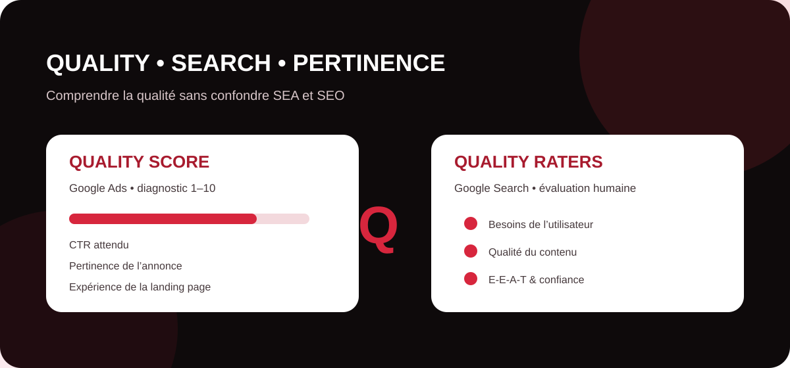

Dans l’écosystème Google, le mot qualité apparaît aussi bien dans la publicité que dans l’évaluation des résultats naturels. Pourtant, le Quality Score et les Quality Raters ne fonctionnent ni de la même façon, ni avec le même objectif. Comprendre cette différence permet de prendre de meilleures décisions en SEA, en SEO et, plus largement, dans une stratégie de visibilité adaptée aux moteurs et aux réponses génératives.

Quality Score
Le Quality Score, ou niveau de qualité, est un indicateur de diagnostic disponible dans Google Ads au niveau du mot-clé. Il est exprimé sur une échelle de 1 à 10 et aide l’annonceur à comprendre comment la qualité de son annonce et de sa page de destination se compare à celle d’autres annonceurs pour des recherches similaires.
Il ne s’agit donc pas d’une note SEO et il n’améliore pas directement le classement organique d’un site. Google précise également que le Quality Score affiché dans le compte n’est pas un KPI à optimiser pour lui-même et n’est pas une donnée directement utilisée comme telle dans l’enchère publicitaire. Il sert surtout à diagnostiquer des axes d’amélioration.
Quels éléments composent le Quality Score ?
Google s’appuie sur trois composantes principales : le taux de clic attendu (CTR), la pertinence de l’annonce par rapport à l’intention de recherche et l’expérience de la page de destination. Chacune peut être indiquée comme supérieure à la moyenne, moyenne ou inférieure à la moyenne.
| Composante | Ce qu’elle évalue | Action utile |
|---|---|---|
| CTR attendu | Probabilité estimée que l’annonce soit cliquée | Travailler la promesse, la précision et l’attractivité du message |
| Pertinence de l’annonce | Adéquation entre recherche, mot-clé et annonce | Créer des groupes et messages cohérents avec l’intention |
| Expérience de la landing page | Utilité et pertinence de la page après le clic | Améliorer contenu, rapidité, lisibilité et continuité du parcours |
Pour une entreprise, l’intérêt du Quality Score est donc opérationnel : si une composante est faible, elle indique où concentrer l’analyse. Une annonce pertinente qui mène vers une landing page peu utile crée par exemple une rupture entre la promesse publicitaire et l’expérience réelle.
Quality raters Google
Les Google Search Quality Raters sont des évaluateurs externes formés à examiner des échantillons de résultats de recherche selon les Search Quality Rater Guidelines publiées par Google. Leur travail aide Google à déterminer si ses systèmes et les changements testés produisent des résultats réellement utiles et de qualité pour les internautes.
Une confusion fréquente consiste à imaginer qu’un Quality Rater peut attribuer manuellement une note à un site et modifier son positionnement. Ce n’est pas ainsi que le système fonctionne. Google indique que les évaluations des raters n’influencent pas directement le classement d’une page individuelle. Elles servent plutôt de retour d’évaluation pour mesurer la qualité des systèmes de recherche et vérifier si les évolutions testées vont dans la bonne direction.
Que regardent les Quality Raters ?
Les consignes de Google accordent une grande importance à la capacité d’une page à remplir son objectif et à satisfaire le besoin de l’utilisateur. Elles abordent également l’E-E-A-T : expérience, expertise, autorité et fiabilité (Trust). Google précise que la confiance occupe une place centrale dans cette grille de lecture, avec une attention particulièrement forte pour les sujets susceptibles d’affecter la santé, les finances, la sécurité ou le bien-être des personnes.
Pour une stratégie SEO ou GEO, ces recommandations sont utiles comme cadre d’auto-évaluation éditoriale. Elles encouragent à identifier clairement qui produit le contenu, pourquoi il est publié, comment les informations sont obtenues et si le lecteur dispose d’éléments suffisants pour leur faire confiance.
Quality Score vs Quality Raters : quelle différence ?
| Notion | Univers | Fonction principale | Impact |
|---|---|---|---|
| Quality Score | Google Ads / SEA | Diagnostiquer la qualité relative des annonces, mots-clés et pages de destination | Indicateur de diagnostic ; ce n’est pas un score SEO |
| Quality Raters | Google Search / SEO | Évaluer des résultats et aider Google à tester la qualité de ses systèmes | Leurs notes ne modifient pas directement le classement d’une page |
Les deux concepts ont néanmoins un point commun : ils rappellent que la visibilité ne se résume pas à insérer des mots-clés. Pertinence, satisfaction de l’intention, utilité de la page, clarté et confiance jouent un rôle central dans l’expérience proposée à l’utilisateur.
Quel enseignement pour le SEO et le GEO ?
Pour le SEO, les Quality Rater Guidelines constituent une grille intéressante pour auditer la qualité éditoriale : objectif clair de la page, contenu principal substantiel, expertise identifiable, réputation, transparence et réponse satisfaisante à la requête. Pour le GEO, ces principes prennent également du sens : une information bien structurée, contextualisée, cohérente et vérifiable est plus facile à interpréter par les systèmes qui doivent synthétiser des sources.
Il faut cependant éviter de transformer ces concepts en recettes mécaniques. L’objectif n’est pas de « séduire un rater » ni de viser artificiellement un score de qualité, mais de produire une expérience réellement utile : répondre à la bonne intention avec une information fiable, accessible et suffisamment complète pour aider l’utilisateur à agir ou à comprendre.
Améliorez la qualité de votre visibilité SEO et GEO
MinoSeo analyse vos contenus, vos pages stratégiques et vos signaux de visibilité afin d’identifier les optimisations prioritaires pour Google et les environnements IA.
Demander un audit gratuit